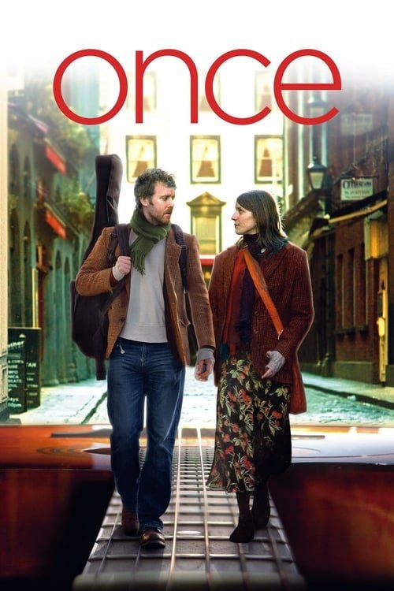

Once (Una vez) (2007)
Sinopsis Rápida
Un encuentro casual entre un músico callejero y una chelista despierta una conexión inesperada, forjando una breve pero intensa relación musical y romántica en el corazón de Dublín.
Sinopsis Detallada
Once cuenta la historia de un músico callejero irlandés y una chelista checa que se conectan a través de su amor compartido por la música. Su romance florece en medio de una serie de encuentros casuales y sesiones improvisadas de composición. La película captura la fragilidad y la belleza de una conexión fugaz, explorando temas de amor, pérdida y el poder de la música como lenguaje universal. La química entre los actores es palpable, llevando la autenticidad de la historia a otro nivel. A pesar de su sencillez, la película es emocionalmente poderosa y profundamente conmovedora.
¿Por qué tenés que verla?
- Una historia de amor simple pero profundamente conmovedora que te tocará el corazón.
- La banda sonora original, compuesta e interpretada por los actores, es inolvidable y ha alcanzado estatus de culto.
- Su estilo minimalista e independiente ha inspirado a numerosos cineastas y músicos.
- Una exploración honesta y realista de las relaciones humanas.
Idea Extra
Análisis de la banda sonora de Once: influencia, impacto y legado musical.